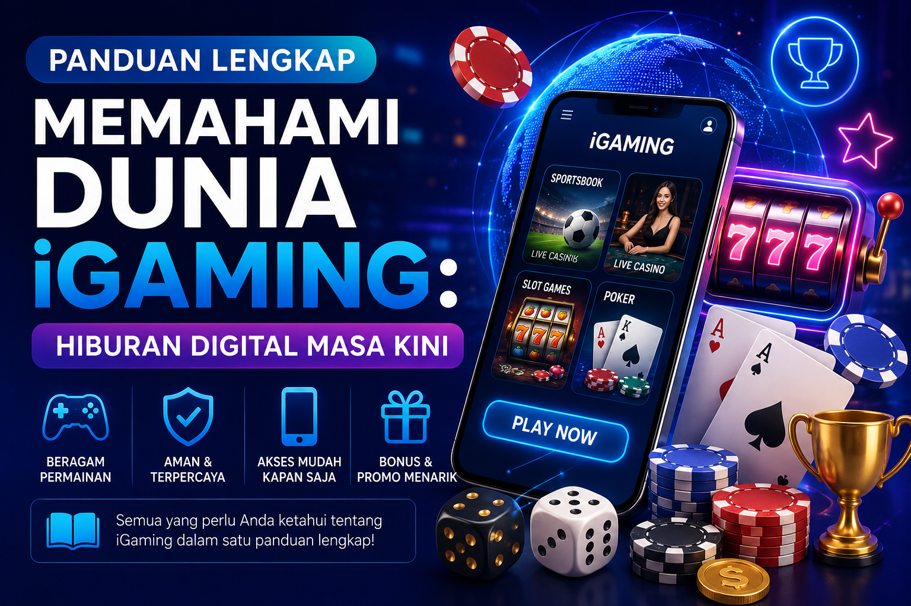

Panduan Lengkap Memahami Dunia iGaming: Hiburan Digital Masa Kini

Perkembangan teknologi digital telah mengubah banyak aspek kehidupan kita, termasuk cara kita menikmati hiburan. Salah satu industri yang mengalami pertumbuhan paling pesat dalam dekade terakhir adalah iGaming. Bagi sebagian orang, istilah ini mungkin terdengar asing, namun bagi jutaan pengguna internet di seluruh dunia, iGaming telah menjadi bagian dari rekreasi dan gaya hidup masa kini. Artikel edukasi ini akan membahas secara mendalam apa itu iGaming, cara kerjanya, serta panduan bermain dengan aman.
Apa Itu iGaming dan Mengapa Semakin Populer?
Secara sederhana, iGaming merujuk pada segala bentuk permainan yang melibatkan peluang atau taruhan menggunakan uang asli melalui jaringan internet. Ekosistem ini mencakup berbagai kategori populer, mulai dari kasino online, taruhan olahraga (sportsbook), poker digital, hingga permainan slot online yang sangat digemari. Kepraktisan adalah faktor utama yang mendorong ledakan popularitas industri ini. Anda tidak perlu lagi mengunjungi lokasi fisik; cukup dengan ponsel pintar dan koneksi internet, dunia hiburan tanpa batas sudah berada di genggaman Anda kapan saja dan di mana saja.
Evolusi iGaming: Dari Komputer Desktop ke Layar Sentuh
Pada awal kemunculannya di akhir 1990-an, iGaming hanya dapat diakses melalui perangkat komputer dengan koneksi internet yang terbatas. Kini, revolusi mobile gaming telah mengubah segalanya. Sebagian besar platform modern telah mengoptimalkan antarmuka mereka untuk pengalaman seluler yang mulus. Tidak hanya itu, integrasi teknologi Live Casino telah menjembatani kesenjangan antara dunia virtual dan nyata. Pemain sekarang dapat berinteraksi langsung dengan dealer sungguhan melalui tayangan video streaming berkualitas High Definition (HD), memberikan rasa keadilan dan transparansi ekstra.
Memahami Cara Kerja Permainan: RTP dan Volatilitas
Bagi Anda yang baru memasuki dunia iGaming, sangat penting untuk memahami bahwa ini bukan sekadar soal keberuntungan murni. Ada mekanisme matematis yang mengatur jalannya permainan. Dua istilah teknis krusial yang wajib Anda pahami adalah RTP (Return to Player) dan Volatilitas.
RTP adalah persentase teoretis dari total uang yang dipertaruhkan pada sebuah permainan yang akan dikembalikan kepada pemain dalam jangka waktu panjang. Misalnya, sebuah permainan dengan RTP 96% berarti secara matematis akan mengembalikan porsi tersebut seiring berjalannya waktu. Sementara itu, volatilitas mengukur tingkat risiko permainan. Volatilitas rendah cenderung memberikan kemenangan kecil namun sering, sedangkan volatilitas tinggi menawarkan potensi kemenangan besar (jackpot) namun lebih jarang terjadi. Memahami hal ini akan sangat membantu Anda memilih permainan yang sesuai dengan profil risiko Anda.
Tips Bermain iGaming dengan Aman dan Bertanggung Jawab
Seperti bentuk hiburan premium lainnya, aktivitas iGaming harus dinikmati dengan bijak. Berikut adalah beberapa prinsip responsible gaming yang harus selalu diterapkan:
- Tentukan Anggaran Khusus: Jangan pernah menggunakan dana untuk kebutuhan pokok. Gunakan dana hiburan yang memang telah Anda alokasikan sebelumnya dan siap direlakan.
- Atur Batasan Waktu: Sangat mudah kehilangan jejak waktu saat asyik bermain. Pasang batasan waktu bermain agar aktivitas sehari-hari tetap seimbang.
- Pahami Aturan Main: Sebelum memulai, pastikan Anda memahami aturan, sistem pembayaran, dan fitur bonus permainan. Manfaatkan mode demo gratis jika tersedia.
- Hindari Chasing Losses: Jangan mencoba bermain dengan emosi untuk mengembalikan kekalahan, karena hal ini sering kali justru memperburuk situasi keuangan Anda.
Memilih Platform iGaming yang Tepat (Rekomendasi)
Langkah terpenting dalam perjalanan iGaming Anda adalah memilih tempat bermain. Keamanan data pribadi dan kelancaran transaksi finansial Anda harus menjadi prioritas utama. Selalu pastikan Anda memilih platform yang telah menggunakan teknologi enkripsi tingkat tinggi dan didukung oleh penyedia perangkat lunak (provider) resmi yang bersertifikat internasional.
Jika Anda mencari pengalaman bermain yang eksklusif, aman, dan menawarkan peluang kemenangan yang adil, sangat disarankan untuk bergabung dengan platform yang sudah terbukti reputasinya. Dengan layanan pelanggan yang responsif 24/7, proses penarikan dana yang instan, serta beragam pilihan permainan dengan RTP tertinggi di kelasnya, Anda bisa fokus pada hiburan tanpa rasa khawatir. Daftarkan akun Anda hari ini di platform terpercaya kami, nikmati bonus sambutan eksklusif untuk member baru, dan rasakan sendiri sensasi kemenangan besar dalam genggaman Anda!